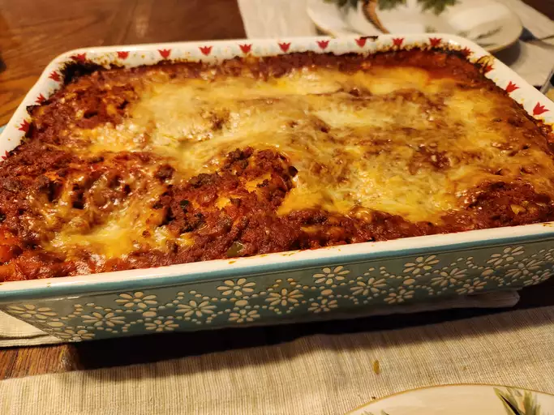

Lasagna Recipe

Delicious Homemade Lasagna
Layers of perfectly cooked lasagna noodles, rich and savory meat sauce, creamy ricotta cheese,
and gooey melted mozzarella come together to create the ultimate comfort food.
This classic lasagna recipe is easy to prepare and perfect for a family dinner or a special occasion.
Serve with a side of garlic bread and a fresh green salad for a complete meal that everyone will love!
Ingridients:
- 1 pound (450g) ground beef or Italian sausage
- 1 jar (24 ounces/680g) marinara or spaghetti sauce
- 9 no-boil lasagna noodles
- 9 no-boil lasagna noodles
- 2 cups (16 ounces/450g) ricotta cheese
- 2 cups (8 ounces/225g) shredded mozzarella cheese
- 1/2 cup (50g) grated Parmesan cheese
- 1 large egg
- 2 teaspoons dried Italian seasoning
Steps:
- Preheat Oven: Set to 375°F (190°C)
- Prepare Meat Sauce
- Mix Cheese Filling
- Assemble Lasagna
- Bake
- Rest and Serve